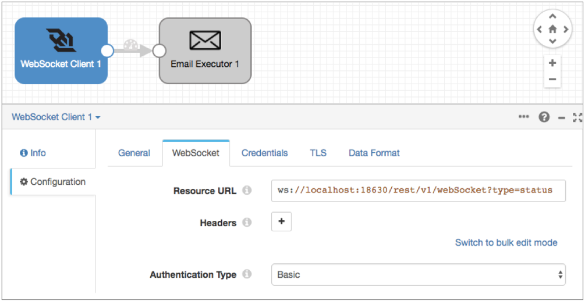

WebSocket Client
The WebSocket Client origin reads data from a WebSocket server endpoint. Use the origin to read data from a WebSocket resource URL.
When the pipeline starts, the WebSocket Client origin opens a connection to the WebSocket server endpoint. The WebSocket server pushes data to the WebSocket Client origin. The origin creates and sends a batch as soon as the data arrives. The size of each batch varies, based on the size of the data sent by the server endpoint. When the pipeline stops, the origin closes the connection to the endpoint.
When you configure the WebSocket Client origin, you define the resource URL and headers to use for the requests. You configure whether the origin uses no authentication or basic authentication to connect to the WebSocket server endpoint. You can also configure SSL/TLS properties, including default transport protocols and cipher suites.
Read REST Response Data from Data Collector
You can use the WebSocket Client origin to read REST response JSON data generated by Data Collector.
Data Collector can serve as a WebSocket server endpoint, as a WebSocket server is simply a TCP application listening on any port of a server that follows a specific protocol.
For example, let's say that your Data Collector runs twenty pipelines and you want to receive an email when any pipeline state changes to Run_Error. Instead of configuring email notifications for all twenty pipelines, you'd like to configure a single global email notification for all of the running pipelines.
- Add a WebSocket Client origin and configure the origin to read from the
following resource
URL:
ws://<Data Collector host>:<Data Collector port>/rest/v1/webSocket?type=status
- Configure the origin to use basic authentication, and then enter a valid Data Collector username and password on the Credentials tab.
- On the Data Format tab, configure the origin to process the JSON data format.
- Add an Email executor to the canvas and connect it to the origin.
- On the Email tab of the executor, enter the following
condition so that the executor sends an email only when a pipeline state changes
to
Run_Error:
${record:value('/status') == 'RUN_ERROR'} - Configure the email IDs, subject, and body for the executor.
For more details about configuring the executor, see Email Executor. Before you run a pipeline that includes the Email executor, you must enable Data Collector to send email.
The configured pipeline looks like this:

Data Formats
The WebSocket Client origin processes data differently based on the data format that you select. The origin processes the following types of data:
- Binary
- Generates a record with a single byte array field at the root of the record.
- When the data exceeds the user-defined maximum data size, the origin cannot process the data. Because the record is not created, the origin cannot pass the record to the pipeline to be written as an error record. Instead, the origin generates a stage error.
- Datagram
- Generates a record for every message. The origin can process collectd messages, NetFlow 5 and NetFlow 9 messages, and the
following types of syslog messages:
- RFC 5424 (https://tools.ietf.org/html/rfc5424)
- RFC 3164 (https://tools.ietf.org/html/rfc3164)
- Non-standard common messages, such as RFC 3339 dates with no version digit
- When processing NetFlow messages, the stage generates different records based on the NetFlow version. When processing NetFlow 9, the records are generated based on the NetFlow 9 configuration properties. For more information, see NetFlow Data Processing.
- Delimited
- Generates a record for each delimited line. You can use the
following delimited format types:
- Default CSV - File that includes comma-separated values. Ignores empty lines in the file.
- RFC4180 CSV - Comma-separated file that strictly follows RFC4180 guidelines.
- MS Excel CSV - Microsoft Excel comma-separated file.
- MySQL CSV - MySQL comma separated file.
- Tab-Separated Values - File that includes tab-separated values.
- Custom - File that uses user-defined delimiter, escape, and quote characters.
- You can use a list or list-map root field type for delimited data, optionally including the header information when available. For more information about the root field types, see Delimited Data Root Field Type.
- When using a header line, you can allow processing records with additional columns. The additional columns are named using a custom prefix and integers in sequential increasing order, such as _extra_1, _extra_2. When you disallow additional columns when using a header line, records that include additional columns are sent to error.
- You can also replace a string constant with null values.
- When a record exceeds the user-defined maximum record length, the
origin cannot continue processing data in the file. Records
already processed from the file are passed to the pipeline. The
behavior of the origin is then based on the error handling
configured for the stage:
- Discard - The origin continues processing with the next file, leaving the partially-processed file in the directory.
- To Error - The origin continues processing with the next file. If a post-processing error directory is configured for the stage, the origin moves the partially-processed file to the error directory. Otherwise, it leaves the file in the directory.
- Stop Pipeline - The origin stops the pipeline.
- JSON
- Generates a record for each JSON object. You can process JSON files that include multiple JSON objects or a single JSON array.
- When an object exceeds the maximum object length defined for the
origin, the origin cannot continue processing data in the file.
Records already processed from the file are passed to the
pipeline. The behavior of the origin is then based on the error
handling configured for the stage:
- Discard - The origin continues processing with the next file, leaving the partially-processed file in the directory.
- To Error - The origin continues processing with the next file. If a post-processing error directory is configured for the stage, the origin moves the partially-processed file to the error directory. Otherwise, it leaves the file in the directory.
- Stop Pipeline - The origin stops the pipeline.
- Log
- Generates a record for every log line.
- When a line exceeds the user-defined maximum line length, the origin truncates longer lines.
- You can include the processed log line as a field in the record. If the log line is truncated, and you request the log line in the record, the origin includes the truncated line.
- You can define the log format or type to be read.
- Protobuf
- Generates a record for every protobuf message.
- Protobuf messages must match the specified message type and be described in the descriptor file.
- When the data for a record exceeds 1 MB, the origin cannot continue processing data in the file. The origin handles the file based on file error handling properties and continues reading the next file.
- For information about generating the descriptor file, see Protobuf Data Format Prerequisites.
- SDC Record
- Generates a record for every record. Use to process records generated by a Data Collector pipeline using the SDC Record data format.
- For error records, the origin provides the original record as read from the origin in the original pipeline, as well as error information that you can use to correct the record.
- When processing error records, the origin expects the error file names and contents as generated by the original pipeline.
- Text
- Generates a record for each line of text or for each section of text based on a custom delimiter.
- When a line or section exceeds the maximum line length defined for the origin, the origin truncates it. The origin adds a boolean field named Truncated to indicate if the line was truncated.
- For more information about processing text with a custom delimiter, see Text Data Format with Custom Delimiters.
- XML
- Generates records based on a user-defined delimiter element. Use an XML element directly under the root element or define a simplified XPath expression. If you do not define a delimiter element, the origin treats the XML file as a single record.
- Generated records include XML attributes and namespace declarations as fields in the record by default. You can configure the stage to include them in the record as field attributes.
- You can include XPath information for each parsed XML element and XML attribute in field attributes. This also places each namespace in an xmlns record header attribute.
-
Note: Field attributes and record header attributes are written to destination systems automatically only when you use the SDC RPC data format in destinations. For more information about working with field attributes and record header attributes, and how to include them in records, see Field Attributes and Record Header Attributes.
- When a record exceeds the user-defined maximum record length, the
origin cannot continue processing data in the file. Records
already processed from the file are passed to the pipeline. The
behavior of the origin is then based on the error handling
configured for the stage:
- Discard - The origin continues processing with the next file, leaving the partially-processed file in the directory.
- To Error - The origin continues processing with the next file. If a post-processing error directory is configured for the stage, the origin moves the partially-processed file to the error directory. Otherwise, it leaves the file in the directory.
- Stop Pipeline - The origin stops the pipeline.
- Use the XML data format to process valid XML documents. For more
information about XML processing, see Reading and Processing XML Data. Tip: If you want to process invalid XML documents, you can try using the text data format with custom delimiters. For more information, see Processing XML Data with Custom Delimiters.
Configuring a WebSocket Client Origin
Configure a WebSocket Client origin to read data from a WebSocket server endpoint.
-
In the Properties panel, on the General tab, configure the
following properties:
General Property Description Name Stage name. Description Optional description. On Record Error 
Error record handling for the stage: - Discard - Discards the record.
- Send to Error - Sends the record to the pipeline for error handling.
- Stop Pipeline - Stops the pipeline.
-
To use SSL/TLS, on the TLS tab, configure the following
properties:
TLS Property Description Use TLS Enables the use of TLS.
Truststore File The path to the truststore file. Enter an absolute path to the file or a path relative to the Data Collector resources directory: $SDC_RESOURCES. For more information about environment variables, see Data Collector Environment Configuration.
By default, no truststore is used.
Truststore Type Type of truststore to use. Use one of the following types: - Java Keystore File (JKS)
- PKCS-12 (p12 file)
Default is Java Keystore File (JKS).
Truststore Password Password to the truststore file. A password is optional, but recommended. Tip: To secure sensitive information such as passwords, you can use runtime resources or credential stores.Truststore Trust Algorithm The algorithm used to manage the truststore. Default is SunX509.
Use Default Protocols Determines the transport layer security (TLS) protocol to use. The default protocol is TLSv1.2. To use a different protocol, clear this option. Transport Protocols The TLS protocols to use. To use a protocol other than the default TLSv1.2, click the Add icon and enter the protocol name. You can use simple or bulk edit mode to add protocols. Note: Older protocols are not as secure as TLSv1.2.Use Default Cipher Suites Determines the cipher suite to use when performing the SSL/TLS handshake. Data Collector provides a set of cipher suites that it can use by default. For a full list, see Cipher Suites.
Cipher Suites Cipher suites to use. To use a cipher suite that is not a part of the default set, click the Add icon and enter the name of the cipher suite. You can use simple or bulk edit mode to add cipher suites. Enter the Java Secure Socket Extension (JSSE) name for the additional cipher suites that you want to use.
-
On the Data Format tab, configure the following
property:
Data Format Property Description Data Format 
Type of data to be processed. Use one of the following options: - Binary
- Datagram
- Delimited
- JSON
- Log
- Protobuf
- SDC Record
- Text
- XML
-
For binary data, on the Data Format tab, configure the
following properties:
Binary Property Description Compression Format The compression format of the files: - None - Processes only uncompressed files.
- Compressed File - Processes files compressed by the supported compression formats.
- Archive - Processes files archived by the supported archive formats.
- Compressed Archive - Processes files archived and compressed by the supported archive and compression formats.
File Name Pattern within Compressed Directory File name pattern that represents the files to process within the compressed directory. You can use UNIX-style wildcards, such as an asterisk or question mark. For example, *.json. Default is *, which processes all files.
Max Data Size (bytes) Maximum number of bytes in the message. Larger messages cannot be processed or written to error. -
For datagram data, on the Data Format tab, configure the
following properties:
Datagram Properties Description Data Format Message type: - collectd
- NetFlow
- syslog
- Raw/separated data
TypesDB File Path Path to a user-provided types.db file. Overrides the default types.db file. For collectd data only.
Convert Hi-Res Time & Interval Converts the collectd high resolution time format interval and timestamp to UNIX time, in milliseconds. For collectd data only.
Exclude Interval Excludes the interval field from output record. For collectd data only.
Auth File Path to an optional authentication file. Use an authentication file to accept signed and encrypted data. For collectd data only.
Record Generation Mode
Determines the type of values to include in the record. Select one of the following options: - Raw Only
- Interpreted Only
- Both Raw and Interpreted
For NetFlow 9 data only.
Max Templates in Cache The maximum number of templates to store in the template cache. For more information about templates, see Caching NetFlow 9 Templates. Default is -1 for an unlimited cache size.
For NetFlow 9 data only.
Template Cache Timeout (ms) The maximum number of milliseconds to cache an idle template. Templates unused for more than the specified time are evicted from the cache. For more information about templates, see Caching NetFlow 9 Templates. Default is -1 for caching templates indefinitely.
For NetFlow 9 data only.
Charset Character encoding of the messages to be processed. Ignore Ctrl Characters Removes all ASCII control characters except for the tab, line feed, and carriage return characters. -
For delimited data, on the Data Format tab, configure the
following properties:
Delimited Property Description Compression Format The compression format of the files: - None - Processes only uncompressed files.
- Compressed File - Processes files compressed by the supported compression formats.
- Archive - Processes files archived by the supported archive formats.
- Compressed Archive - Processes files archived and compressed by the supported archive and compression formats.
File Name Pattern within Compressed Directory File name pattern that represents the files to process within the compressed directory. You can use UNIX-style wildcards, such as an asterisk or question mark. For example, *.json. Default is *, which processes all files.
Delimiter Format Type Delimiter format type. Use one of the following options: - Default CSV - File that includes comma-separated values. Ignores empty lines in the file.
- RFC4180 CSV - Comma-separated file that strictly follows RFC4180 guidelines.
- MS Excel CSV - Microsoft Excel comma-separated file.
- MySQL CSV - MySQL comma separated file.
- Tab-Separated Values - File that includes tab-separated values.
- Custom - File that uses user-defined delimiter, escape, and quote characters.
Header Line Indicates whether a file contains a header line, and whether to use the header line. Allow Extra Columns When processing data with a header line, allows processing records with more columns than exist in the header line. Extra Column Prefix Prefix to use for any additional columns. Extra columns are named using the prefix and sequential increasing integers as follows: <prefix><integer>. For example, _extra_1. Default is _extra_.
Max Record Length (chars) Maximum length of a record in characters. Longer records are not read. This property can be limited by the Data Collector parser buffer size. For more information, see Maximum Record Size.
Delimiter Character Delimiter character for a custom delimiter format. Select one of the available options or use Other to enter a custom character. You can enter a Unicode control character using the format \uNNNN, where N is a hexadecimal digit from the numbers 0-9 or the letters A-F. For example, enter \u0000 to use the null character as the delimiter or \u2028 to use a line separator as the delimiter.
Default is the pipe character ( | ).
Escape Character Escape character for a custom file type. Quote Character Quote character for a custom file type. Root Field Type Root field type to use: - List-Map - Generates an indexed list of data. Enables you to use standard functions to process data. Use for new pipelines.
- List - Generates a record with an indexed list with a map for header and value. Requires the use of delimited data functions to process data. Use only to maintain pipelines created before 1.1.0.
Lines to Skip Lines to skip before reading data. Parse NULLs Replaces the specified string constant with null values. NULL Constant String constant to replace with null values. Charset Character encoding of the files to be processed. Ignore Ctrl Characters Removes all ASCII control characters except for the tab, line feed, and carriage return characters. -
For JSON data, on the Data Format tab, configure the
following properties:
JSON Property Description Compression Format The compression format of the files: - None - Processes only uncompressed files.
- Compressed File - Processes files compressed by the supported compression formats.
- Archive - Processes files archived by the supported archive formats.
- Compressed Archive - Processes files archived and compressed by the supported archive and compression formats.
File Name Pattern within Compressed Directory File name pattern that represents the files to process within the compressed directory. You can use UNIX-style wildcards, such as an asterisk or question mark. For example, *.json. Default is *, which processes all files.
Maximum Object Length (chars) Maximum number of characters in a JSON object. Longer objects are diverted to the pipeline for error handling.
This property can be limited by the Data Collector parser buffer size. For more information, see Maximum Record Size.
Charset Character encoding of the files to be processed. Ignore Ctrl Characters Removes all ASCII control characters except for the tab, line feed, and carriage return characters. -
For log data, on the Data Format tab, configure the
following properties:
Log Property Description Compression Format The compression format of the files: - None - Processes only uncompressed files.
- Compressed File - Processes files compressed by the supported compression formats.
- Archive - Processes files archived by the supported archive formats.
- Compressed Archive - Processes files archived and compressed by the supported archive and compression formats.
File Name Pattern within Compressed Directory File name pattern that represents the files to process within the compressed directory. You can use UNIX-style wildcards, such as an asterisk or question mark. For example, *.json. Default is *, which processes all files.
Log Format Format of the log files. Use one of the following options: - Common Log Format
- Combined Log Format
- Apache Error Log Format
- Apache Access Log Custom Format
- Regular Expression
- Grok Pattern
- Log4j
Max Line Length Maximum length of a log line. The origin truncates longer lines. This property can be limited by the Data Collector parser buffer size. For more information, see Maximum Record Size.
Retain Original Line Determines how to treat the original log line. Select to include the original log line as a field in the resulting record. By default, the original line is discarded.
Charset Character encoding of the files to be processed. Ignore Ctrl Characters Removes all ASCII control characters except for the tab, line feed, and carriage return characters. - When you select Apache Access Log Custom Format, use Apache log format strings to define the Custom Log Format.
- When you select Regular Expression, enter the regular expression that describes the log format, and then map the fields that you want to include to each regular expression group.
- When you select Grok Pattern, you can use the
Grok Pattern Definition field to define
custom grok patterns. You can define a pattern on each line.
In the Grok Pattern field, enter the pattern to use to parse the log. You can use a predefined grok patterns or create a custom grok pattern using patterns defined in Grok Pattern Definition.
For more information about defining grok patterns and supported grok patterns, see Defining Grok Patterns.
- When you select Log4j, define the following properties:
Log4j Property Description On Parse Error Determines how to handle information that cannot be parsed: - Skip and Log Error - Skips reading the line and logs a stage error.
- Skip, No Error - Skips reading the line and does not log an error.
- Include as Stack Trace - Includes information that cannot be parsed as a stack trace to the previously-read log line. The information is added to the message field for the last valid log line.
Use Custom Log Format Allows you to define a custom log format. Custom Format Use log4j variables to define a custom log format.
-
For protobuf data, on the Data Format tab, configure the
following properties:
Protobuf Property Description Compression Format The compression format of the files: - None - Processes only uncompressed files.
- Compressed File - Processes files compressed by the supported compression formats.
- Archive - Processes files archived by the supported archive formats.
- Compressed Archive - Processes files archived and compressed by the supported archive and compression formats.
File Name Pattern within Compressed Directory File name pattern that represents the files to process within the compressed directory. You can use UNIX-style wildcards, such as an asterisk or question mark. For example, *.json. Default is *, which processes all files.
Protobuf Descriptor File Descriptor file (.desc) to use. The descriptor file must be in the Data Collector resources directory, $SDC_RESOURCES. For more information about environment variables, see Data Collector Environment Configuration. For information about generating the descriptor file, see Protobuf Data Format Prerequisites.
Message Type The fully-qualified name for the message type to use when reading data. Use the following format: <package name>.<message type>.
Use a message type defined in the descriptor file.Delimited Messages Indicates if a file might include more than one protobuf message. -
For SDC Record data, on the Data Format tab, configure the
following properties:
SDC Record Property Description Compression Format The compression format of the files: - None - Processes only uncompressed files.
- Compressed File - Processes files compressed by the supported compression formats.
- Archive - Processes files archived by the supported archive formats.
- Compressed Archive - Processes files archived and compressed by the supported archive and compression formats.
File Name Pattern within Compressed Directory File name pattern that represents the files to process within the compressed directory. You can use UNIX-style wildcards, such as an asterisk or question mark. For example, *.json. Default is *, which processes all files.
-
For text data, on the Data Format tab, configure the
following properties:
Text Property Description Compression Format The compression format of the files: - None - Processes only uncompressed files.
- Compressed File - Processes files compressed by the supported compression formats.
- Archive - Processes files archived by the supported archive formats.
- Compressed Archive - Processes files archived and compressed by the supported archive and compression formats.
File Name Pattern within Compressed Directory File name pattern that represents the files to process within the compressed directory. You can use UNIX-style wildcards, such as an asterisk or question mark. For example, *.json. Default is *, which processes all files.
Max Line Length Maximum number of characters allowed for a line. Longer lines are truncated. Adds a boolean field to the record to indicate if it was truncated. The field name is Truncated.
This property can be limited by the Data Collector parser buffer size. For more information, see Maximum Record Size.
Use Custom Delimiter Uses custom delimiters to define records instead of line breaks. Custom Delimiter One or more characters to use to define records. Include Custom Delimiter Includes delimiter characters in the record. Charset Character encoding of the files to be processed. Ignore Ctrl Characters Removes all ASCII control characters except for the tab, line feed, and carriage return characters. -
For XML data, on the XML tab, configure the following
properties:
XML Property Description Compression Format The compression format of the files: - None - Processes only uncompressed files.
- Compressed File - Processes files compressed by the supported compression formats.
- Archive - Processes files archived by the supported archive formats.
- Compressed Archive - Processes files archived and compressed by the supported archive and compression formats.
Delimiter Element Delimiter to use to generate records. Omit a delimiter to treat the entire XML document as one record. Use one of the following:- An XML element directly under the root element.
Use the XML element name without surrounding angle brackets ( < > ) . For example, msg instead of <msg>.
- A simplified XPath expression that specifies the
data to use.
Use a simplified XPath expression to access data deeper in the XML document or data that requires a more complex access method.
For more information about valid syntax, see Simplified XPath Syntax.
Include Field XPaths Includes the XPath to each parsed XML element and XML attribute in field attributes. Also includes each namespace in an xmlns record header attribute. When not selected, this information is not included in the record. By default, the property is not selected.
Note: Field attributes and record header attributes are written to destination systems automatically only when you use the SDC RPC data format in destinations. For more information about working with field attributes and record header attributes, and how to include them in records, see Field Attributes and Record Header Attributes.Namespaces Namespace prefix and URI to use when parsing the XML document. Define namespaces when the XML element being used includes a namespace prefix or when the XPath expression includes namespaces. For information about using namespaces with an XML element, see Using XML Elements with Namespaces.
For information about using namespaces with XPath expressions, see Using XPath Expressions with Namespaces.
Using simple or bulk edit mode, click the Add icon to add additional namespaces.
Output Field Attributes Includes XML attributes and namespace declarations in the record as field attributes. When not selected, XML attributes and namespace declarations are included in the record as fields. Note: Field attributes are automatically included in records written to destination systems only when you use the SDC RPC data format in the destination. For more information about working with field attributes, see Field Attributes.By default, the property is not selected.
Max Record Length (chars) The maximum number of characters in a record. Longer records are diverted to the pipeline for error handling.
This property can be limited by the Data Collector parser buffer size. For more information, see Maximum Record Size.
Charset Character encoding of the files to be processed. Ignore Ctrl Characters Removes all ASCII control characters except for the tab, line feed, and carriage return characters.